Практичний досвід · журнал «ДентАрт» 2022 №3
Причини поломок інструментів у практиці лікаря-стоматолога та способи їх усунення
Causes of breakage of instruments in the practice of a dentist and ways to eliminate them
Сучасну ендодонтію можна з упевненістю назвати напрямком у стоматології, що розвивається найбільш динамічно. Прогрес торкнувся кожної ланки цієї спеціалізації, починаючи з діагностики і закінчуючи сучасними методами обтурації. Однак поява та розширення асортименту нових ендодонтичних інструментів для препарування кореневих каналів спричинила підвищену кількість поломок у системі кореневих каналів, що є одним із найчастіших ускладнень.
Видалення зламаного інструмента, обхід (bypass) чи включення до складу обтураційного матеріалу – спосіб усунення проблеми визначається індивідуально після всебічного аналізу конкретного клінічного випадку. На ухвалення рішення впливають: анатомія кореневого каналу, ступінь його інфікування, вид зламаного інструмента, положення в каналі, складнощі та ризики під час видалення.
Процедура видалення продовжує залишатися трудомісткою, дорогою і вкрай непередбачуваною. До недавнього часу відсоток видалених зубів через неякісне ендодонтичне лікування був досить високим, і фрагментовані інструменти стали каменем спотикання на шляху до досягнення успішного результату лікування. Частота таких випадків коливається від 0,7 до 1,6 %. Поломкам інструментів з нержавіючої сталі в основному можна запобігти, відстежуючи за допомогою збільшувального скла (лупи) ознаки втоми металу. З усіх нікель-титанових інструментів 10 % ламаються під час першого використання; якщо навіть інструмент застосовуємо один раз сильно, ми, звичайно, зменшуємо кількість переломів, але все одно вони будуть.
«Не ламає той, хто не працює»
Причини поломки
- Недооцінка складності анатомії кореневих каналів. За статистикою, більшість інструментів ламаються в мезіальних каналах нижніх молярів, оскільки там часто існує подвійний вигин.
- Помилка створення доступу.
- Недотримання протоколів роботи ротаційними файлами.
- Надмірний тиск на інструмент.
- Відсутність досвіду застосування ротаційних файлів.
- Багаторазове використання інструментів.
- Поспіх у роботі.
Фактори, від яких залежить складність видалення
Складність видалення фрагмента інструмента з кореневого каналу залежить від багатьох факторів.
1. Тип матеріалу зламаного інструмента
Звичайно ж, файли з нержавіючої сталі видалити легше, оскільки у процесі видалення вони не фрагментуються (за винятком каналонаповнювачів), тоді як нікель-титанові інструменти можуть знову ламатися під впливом ультразвукових коливань і генерації тепла від роботи ультразвукових насадок у процесі видалення.
Обговорення. Зуб 26 (симптоматичний) з виведеним фрагментом каналонаповнювача (чорна стрілка) в періапікальній тканині, у процесі видалення він двічі ламався на окремі витки (інструмент мав ознаки корозії), потім фрагмент був втрачений з поля зору, і щоб не допустити витончення стінки за малою кривизною мезіо-букального кореня, було ухвалене компромісне рішення обтурувати кореневі канали, орієнтуючись на значення апекслокатора та прицільну рентгенвізіографію.
Рекомендація – динамічний нагляд за клінічною ситуацією через 6, 12, 24, 48 місяців, у разі появи рентгенологічних ознак періодонтиту вдатися до апікальної хірургії. Через 12 місяців зуб асимптоматичний, скарги відсутні.
2. Анатомія каналу
Лікар працює в об’ємному порожнистому просторі кореневого каналу, і слід враховувати, зокрема, поперечний переріз. Крім імовірності послабити зуб при розширенні каналу і використанні УЗ насадок, є всі шанси створити перфорацію та стрип-перфорацію. Дослідники доводять нам, що у нижніх молярах у мезіальному корені є інвагінація з боку фуркації. Як наслідок, дентин тут дуже тонкий, є небезпечна зона – Danger Zone (Abou-Rass, 1982), а коли дивимося на двомірний знімок, цієї ділянки не бачимо.
3. Рівень, на якому було зламано інструмент
Якщо інструмент зламався в устьовій третині, то видалення, як правило, не становить великих труднощів.
Якщо фрагмент локалізується в середній третині або апікально щодо вигину кореня, то перше, що слід зробити, – спробувати обійти (bypass) його. При процедурі bypass зберігається тканина зуба, і слід враховувати, що, як встановили Wu, Wesselink (2000), у від 25 % до 50 % випадків канал на поперечному зрізі не круглий, а має довгоовальну форму, і є всі шанси виконати обхід, головне – терпіння і завзятість. Якщо не вдалося – слід оцінити ризики, пов’язані з цією процедурою (перфорація, ослаблення стінок, транспортація або сильне розширення апекса кореня, додаткова поломка, проштовхування інструмента за межі кореня). Якщо фрагмент щільно фіксований в зоні апекса, його можна включити до складу кореневої пломби.
4. Ступінь інфікованості кореневого каналу
Велике значення для прогнозу успішності лікування має те, був інструмент зламаний у неінфікованому чи в інфікованому каналі зуба. Так, перелом стерильного інструмента поблизу апікального отвору в неінфікованому каналі або ж на фінальній стадії очищення каналу може не вплинути негативно на результат лікування.
Якщо ж поломка відбувається на початковій стадії очищення або фрагмент інструмента залишився в інфікованому каналі і його розташування унеможливлює повноцінну обробку верхівкової третини каналу, несприятливий результат лікування неминучий.
5. Інструменти
Без наявності збільшувальних приладів, ультразвукових апаратів, насадок і т. д. видалення у багатьох випадках просто нездійсненне.
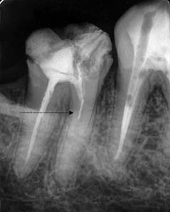
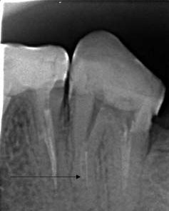
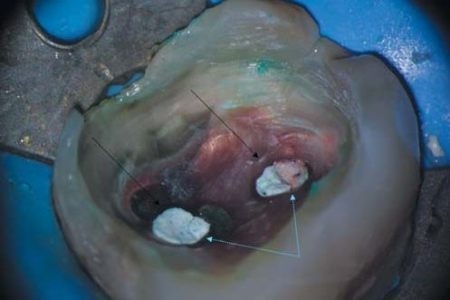
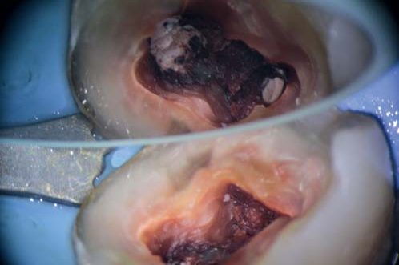
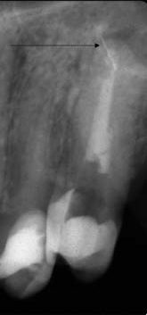
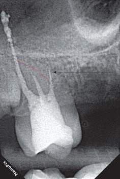
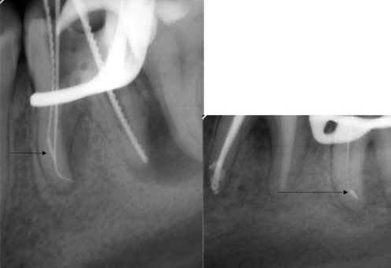
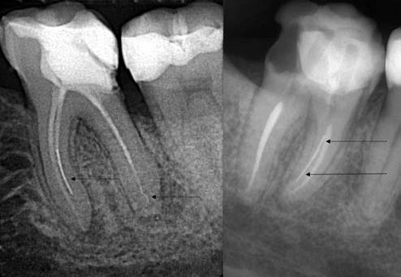
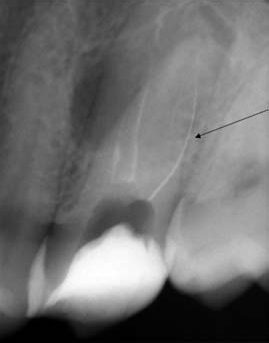
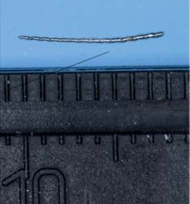
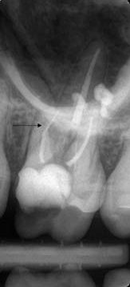
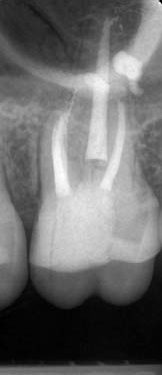
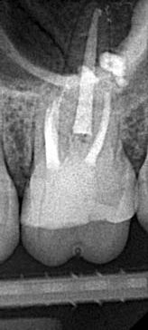
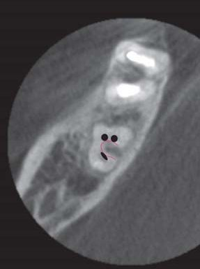
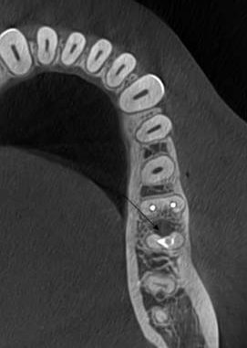
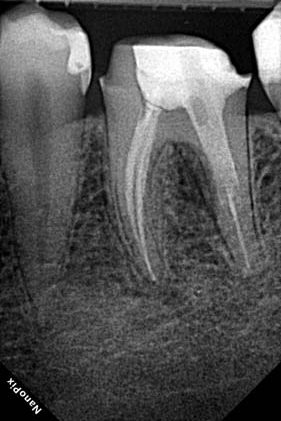
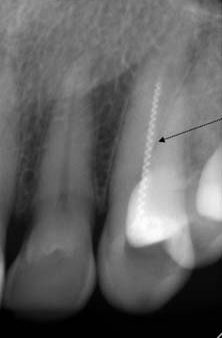
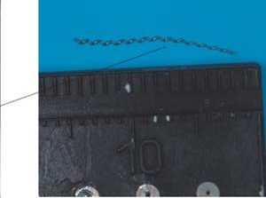
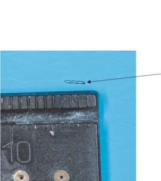
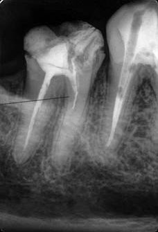
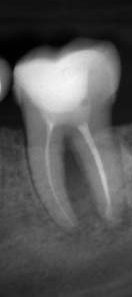
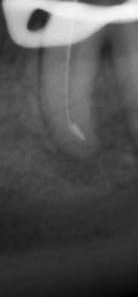
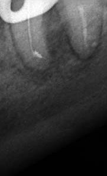
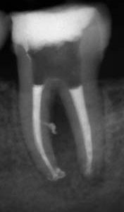
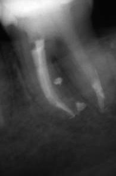
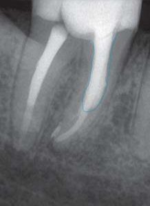
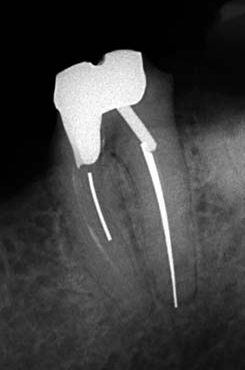
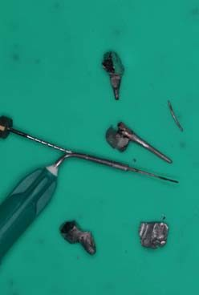
Тактика видалення фрагментованого інструмента
1. Створення коронкового доступу до фрагмента – розширення доступу до устя каналу зі зламаним інструментом створюємо за допомогою обрізаного до середини робочої активної частини Gates Glidden – створюємо Staging platform. Методику запропонував у 1997 році Clifford J. Ruddle. Все було б добре, але у цієї методики є великий мінус, і він добре описаний у книзі Михайла Соломонова «Академічний монолог про переліковування». Lang і співавт. (2006) спробували простежити, як послаблюється зуб, коли вони розкрутками готують канали під вкладками, і виявили цікаву річ: найгірший варіант, найсильніше ослаблення, що втричі збільшує деформацію каналу, – коли його готують під паралельний анкерний штифт. Згадайте, яку форму каналу робить обрізаний Gates Glidden? Паралельну. Це найгірший варіант розширення! Але без цього розширення технічно важко витягнути зламаний файл, і ми повинні розуміти, що деформація каналу при цьому дуже-дуже сильна. У 1992 році прозвучала фраза, яка взагалі має стати гаслом у будь-якій клініці: «Міцність ендодонтично пролікованого зуба прямо пропорційна здоровим тканинам, що залишилися» (Sornkul, 1992).
2. Вивільнення уламка від навколишнього дентину за допомогою ультразвукової насадки. При цьому для звільнення простору навколо фрагмента слід видалити велику кількість дентину, що призводить до ослаблення стінок кореня.
3. Якщо інструмент усе ще в каналі, то звільнений від дентину кінчик уламка затискуємо мікротрубковою системою (Cancellier, IRS, порожниста голка і H-file) і видаляємо.
Клінічний випадок 1
Пацієнтка, 38 років, направлена на повторне ендодонтичне лікування зуба 36. На момент звернення скарг не висувала. При огляді виявлено велику реставрацію.
Пальпація перехідної складки безболісна, перкусія негативна. Зондування сулькулярного простору з мезіальної до дистально-апроксимальної стінки вестибулярна сторона (2 мм, 2 мм, 4 мм); з мезіальної до дистально-апроксимальної стінки лінгвальна сторона (2 мм, 3 мм, 4 мм). На передопераційній інтраоральній рентгенограмі зуба 36 визначається неповна та негомогеннa обтурація кореневих каналів, два фрагменти інструмента, осередок просвітлення на медіальному та дистальному коренях.
Діагноз: асимптоматичний апікальний періодонтит зуба 36, наявність двох зламаних інструментів.
Лікування
Під інтралігаментарною анестезією 4 %-1/200000 Ubistezin (3M) видалили старий пломбувальний матеріал і тканини, уражені вторинним каріозним процесом, за допомогою кулястого алмазного бора з довгою ніжкою 6801L.314.016 (Komet), підвищуючого наконечника Ti-Max Z95L (NSK, Nakanishi, INC), під контролем операційного мікроскопа Zumax 2350 (Zumax Medical Co Ltd) та карієс-маркера Sable Seek (Ultradent). З метою створення сприятливих умов для ізоляції зроблено передендодонтичне відновлення з допомогою композиту для кукси Build-It (Pentron).
Далі розпломбування кореневих каналів почали з дистального, використали розчинник для гутаперчі (хлороформ), сталеві ручні K-File 06.02, 08.02, 10.02 (Kendo, VDW) + H-File (15.02, 20.02). Вдалося обійти зламаний каналонаповнювач K-file 08.02 і знайти справжній хід каналу – отримали відтік ексудату. У міру того, як розширювали кореневий канал ручними файлами в комбінації знижувального наконечника для ручних файлів М4 (Sybron Endo), інструмент вийшов після чергового промивання кореневого каналу розчином 5,25 % гіпохлориту натрію.
Мезіо-букальний кореневий канал здався досить швидко: розчинник (хлороформ), сталеві ручні К-File, ротаційні машинні файли E3 Azure (Poldent) завершили обробку 40.04. Мезіо-лінгвальний: створений доступ до уламка Staging platform, далі за допомогою насадки Е1 (Woodpecker) + U-file #20 (Mani) прибрали дентин по периметру інструмента і витягли його, застосувавши техніку порожнистої голки та H-file (у ролі замикаючого файла виступив ротаційний NiTi файл NT2 30.02 (Poldent) – перше, що потрапило під руку).
Обтурація виконана в техніці гарячої вертикальної конденсації апаратом Fast Pack&Fast Fill (Eighteeth) + епоксидний силер AH+ (Dentsply Sirona), тимчасова пломба – IRM (Dentsply Sirona). Пацієнтка направлена до свого лікаря для завершення лікування.
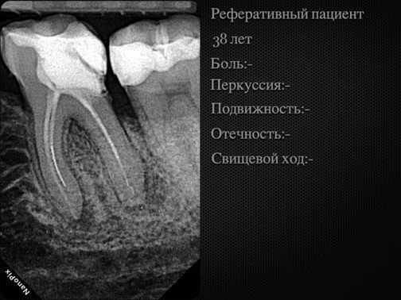
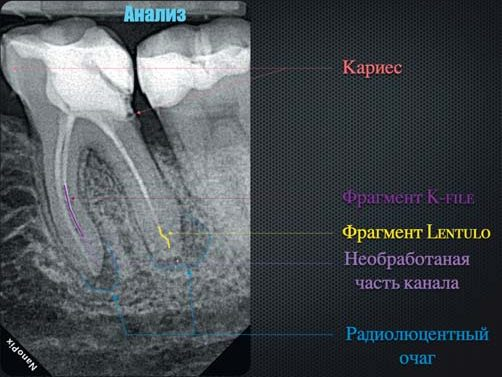
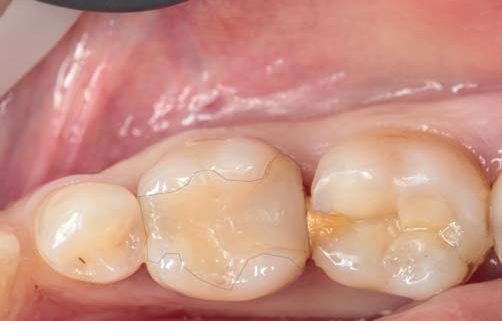
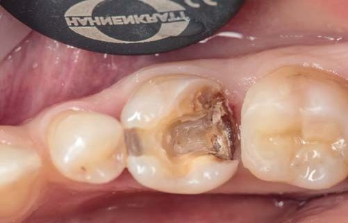
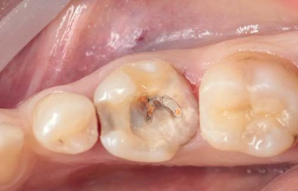
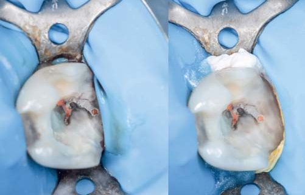
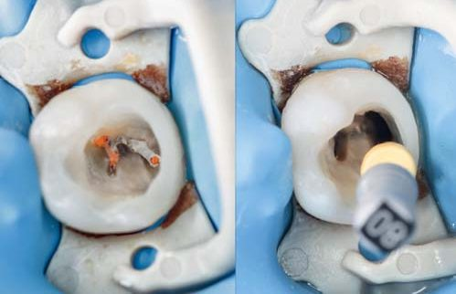
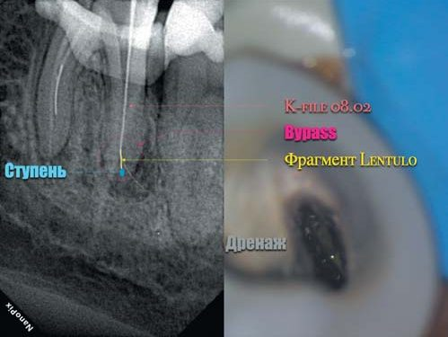
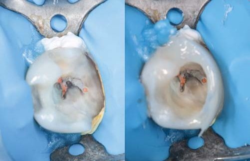
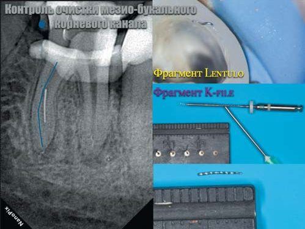
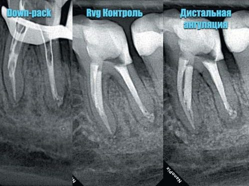
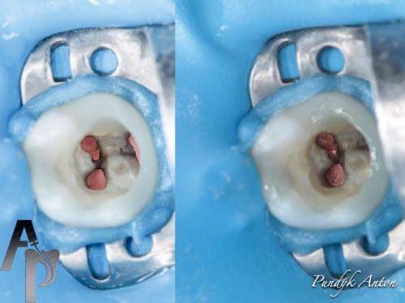
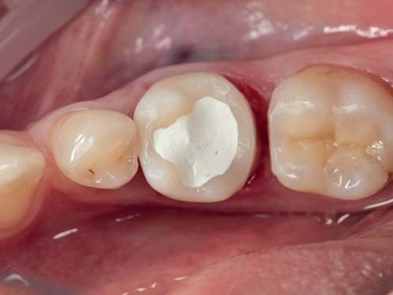
Клінічний випадок 2
Пацієнтка, 43 роки, направлена на повторне ендодонтичне лікування. З анамнезу: зуб лікували 2 роки тому, пацієнтка повідомила про наявність зламаних інструментів. Основні скарги: відчуття зуба, що виріс, біль при накушуванні, перкусія різко позитивна, при пальпації – перехідна складка безболісна, не згладжена, синус-тракт відсутній. Коронкова частина зуба зруйнована. Інтраоральна рентгенограма зуба 47: наявність двох скловолоконних штифтів, два зламані інструменти.
Діагноз: симптоматичний апікальний періодонтит зуба 47.
Лікування
Інтралігаментарна анестезія 4 %-1/200000 Ubistezin (3M). Під контролем операційного мікроскопа Zumax 2350 (Zumax Medical) підвищуючим наконечником Ti-Max Z95L (NSK) і кулястим бором 6801L.314.016 (Komet) видалені залишки композиту, каріозні тканини з коронкової частини зуба 47.
Далі передендодонтичний етап включав: гінгівоектомію за допомогою діатермокоагулятора ДТС-03С, використання гемостатичного гелю Viscostat (Ultradent) для усунення капілярної кровотечі, ізоляцію робочого поля системою рабердам, повітряно-абразивну обробку поверхні зуба 47 за допомогою інтраорального наконечника DentoPrep Microblaster (Ronving) з діаметром частинок абразиву 50 мкм, адгезивний протокол, відновлення стінок композитом для кукси Build-It (Pentron).
Далі зруйнували обидва штифти за допомогою ультразвукової насадки E1 (WoodPecker) & U-File #20 (Mani) з рясною іригацією 5,25 % розчином гіпохлориту натрію.
Створили доступ (Staging Platform) до уламків, прибравши по периметру інструментів дентин, витягли їх за допомогою голки та H-File 20.02. Розпломбування проводилося за допомогою K-File (06.02-10.02), H-file (08.02-15.02) та наконечника М4 (Sybron Endo), препарування кореневих каналів – Easy Path (Poldent) для створення килимової доріжки, Е3 Azure (Poldent).
Результат. Фінішували дистальний кореневий канал – 60.02, мезіально-щічний та мезіально-лінгвальний кореневі канали закінчуються одним апікальним отвором за другим класом Вертуччі – 50.02. Обтурація-апексифікація дистального кореневого каналу: використовували гемостатичну губку (виведена за межі кореня) як матрицю «упору» з метою запобігання протрузії цементу МТА в процесі роботи. Bio MTA+ (Cerkamed) внесений порційно за допомогою плагера S-Condensor (Obtura/Spartan), цемент сконденсований паперовим піном 60.02 (Sure-Endo) та ущільнений ультразвуком.
Канали запломбовані гарячою вертикальною конденсацією за допомогою обтураційної системи Fast Pack&Fast Fill (Eighteeth) з епоксидним силером AH+ (Dentsply Sirona), тимчасова пломба IRM (Dentsply Sirona). Пацієнтка направлена на завершення лікування.
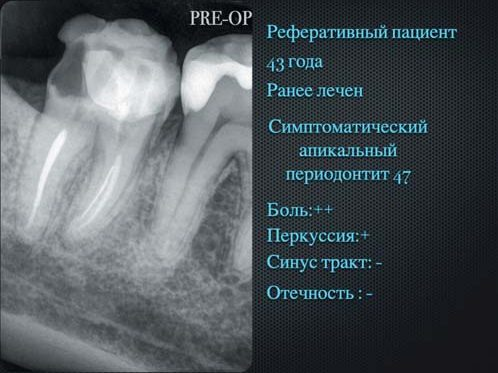
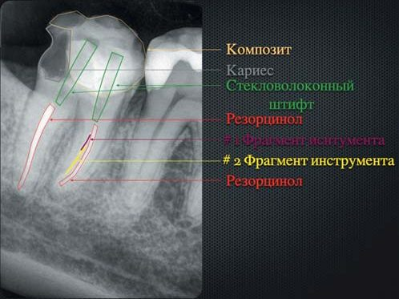
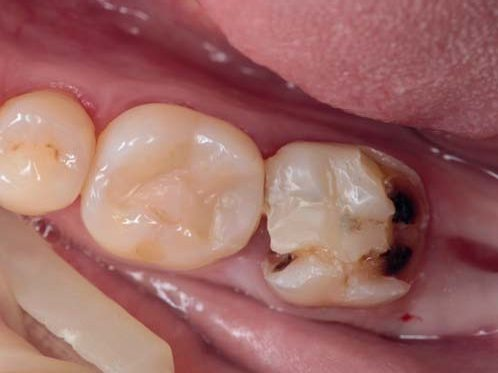
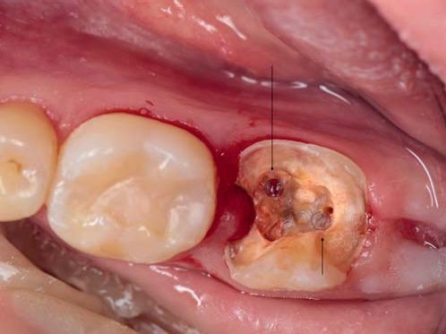
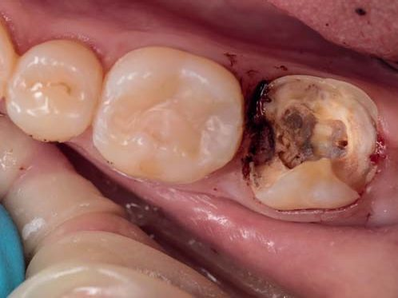
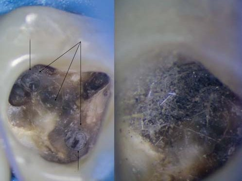
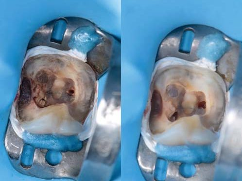
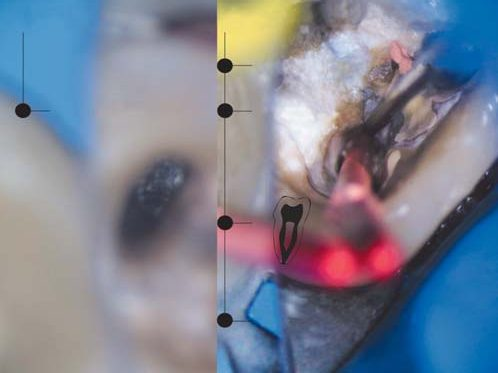
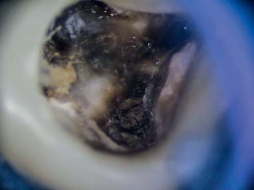
Висновки
Хочеться ще раз підкреслити, що вилучення уламка інструмента з кореневого каналу може виявитися дуже складним завданням, вирішення якого вимагатиме багато часу. Якось доктор Marga Ree сказала, що суть ендодонтії – це Пристрасть, Завзяття і Терпіння. Ця формула цілком правильна і в тому випадку, коли йдеться про видалення з каналу фрагмента файла.
Література
- Wu M-K., van der Sluis L., Wesselink P. R. (2003). The capacity of two hand instrumentation techniques to remove the inner layer of dentin in oval canals. Int Endod J. 36:218–24.
- Weine F. S. (1996). Endodontic Therapy. 5th ed. St Louis, MO: Mosby.
- М. Соломонов. Монолог о перелечивании. Часть 2. Технические аспекты перелечивания. С. 152–153.
- Hülsmann M. (1993). Methods for removing metal obstructions from the root canal. Endod Dent Traumatol. P. 223–237.
- Rhodes J. Essential elements of endodontic retreatment: removal of separated instruments. Endodontic Practice. 10(3):6–12.
- Gorni F. The Use of Ultrasonics in Endodontics. ROOTS international magazine of endodontology. 1(1):41–56.